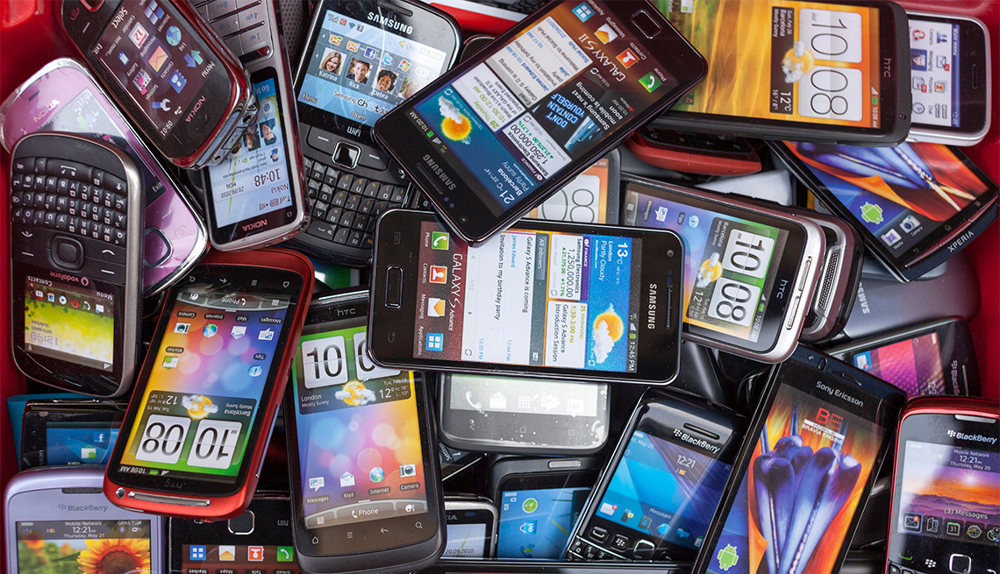

 La tecnología móvil es la tecnología que va adonde va el usuario. Consiste en dispositivos portátiles de comunicaciones bidireccionales, dispositivos de computación y la tecnología de red que los conecta. Actualmente, la tecnología móvil se caracteriza por dispositivos habilitados para Internet como smartphones, tablets y relojes. Estos son los últimos en una progresión que incluye buscapersonas bidireccionales, computadoras portátiles, teléfonos celulares (teléfonos plegables), dispositivos de navegación GPS y más. Las redes de comunicaciones que conectan estos dispositivos se denominan en términos generales tecnologías inalámbricas. Permiten que los dispositivos móviles compartan voz, datos y aplicaciones (aplicaciones móviles). La tecnología móvil es omnipresente y está creciendo. El número de usuarios de teléfonos inteligentes ha superado los 3 mil millones¹ y se espera que la fuerza laboral móvil mundial alcance los 1.870 millones para 2022.²